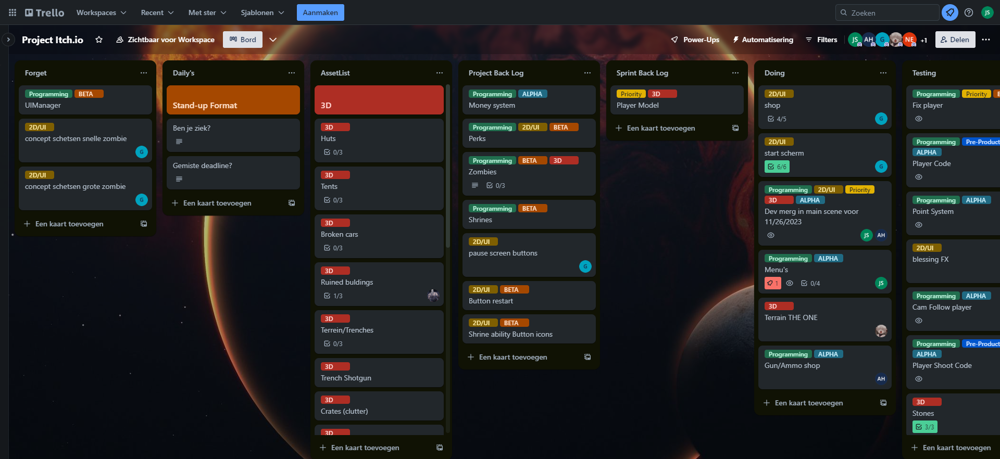

Usage/Explanation
This is a trello page i used on a project with schoolmates for a school project.

Trello:
Definition: Trello is the visual tool that empowers your team to manage any type of project, workflow, or task tracking. Add files, checklists, or even automation.
Features: Trello employs boards, cards, and lists for project management, subtasks within a card can be made with checklists, tasks can be allocated to several members, so they will be notified of any card changes,
the tasks can have deadlines included, an activity log keeps the team up to date.
Workflow: To Do, Doing, Done. Cards are moved across these lists as they're being worked on or completed. As a user, you can change the name of your lists to anything you'd like.
In summary,
Trello is a collaboration tool that organizes your projects into boards. In one glance, Trello tells you what's being worked on, who's working on what, and where something is in a process. Imagine a white board, filled with lists of sticky notes, with each note as a task for you and your team.